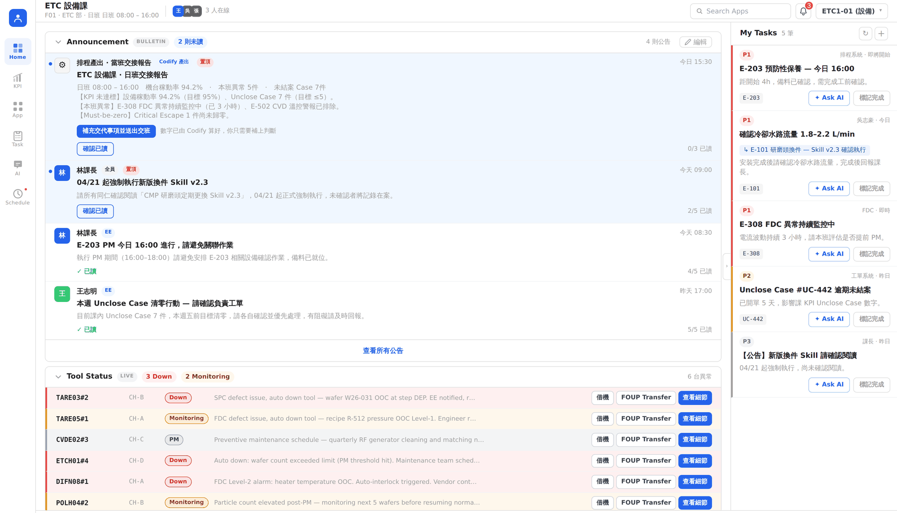
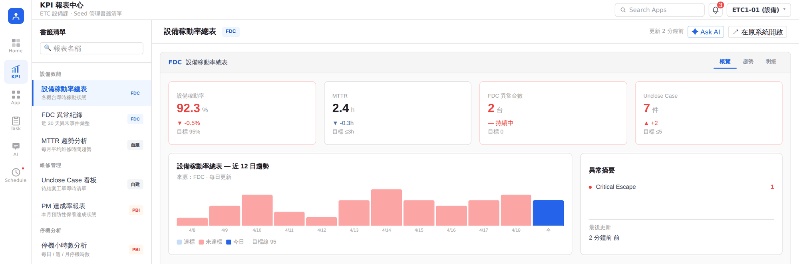
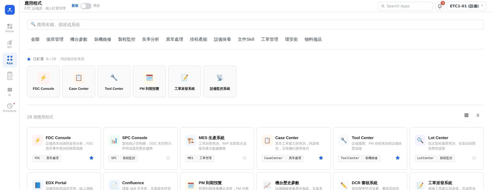
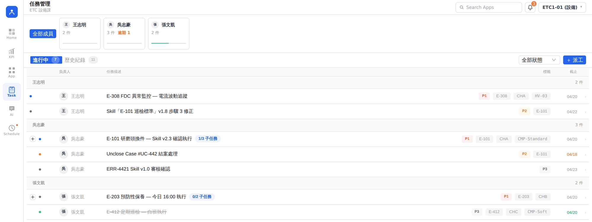
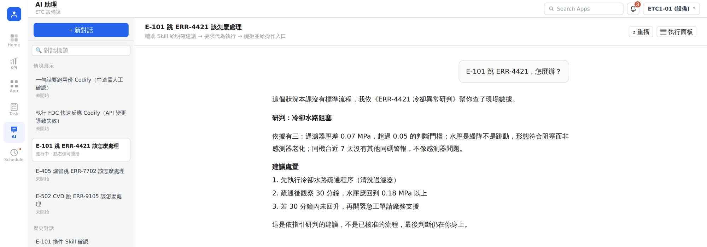
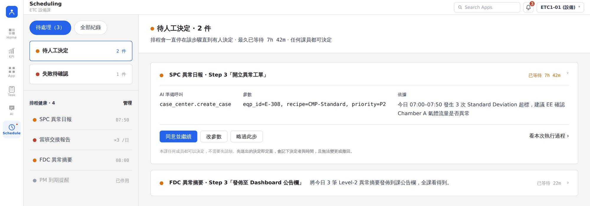

以「課」為單位的線上工作站
Your whole section, on one page.
KPI 報表、AR 派工、機台狀態、常用系統，開班打開就有。
KPI reports, task dispatch, tool status, and every system you use.
Six features
Click any feature to see what it does.
點任一個，看它實際長什麼樣。
開班第一眼，課上今天的狀況全在這頁。
接的系統設備監控系統、Case Center、Lot Center，加上排程產出

各角色看到的不同EE 先看機台與未結案 Case，PE 先看 SPC OOC，MFG 先看線體產出
課上要看的報表集中在這頁。
接的系統FDC、SPC、PBI，加上課上自建的報表

各角色看到的不同EE 看稼動率與 MTTR，PE 看良率與 SPC OOC，MFG 看產出達成率
課上在用的 28 個系統，都在這頁。
接的系統FDC Console、SPC Console、MES、Case Center、Tool Center、Lot Center、Recipe Manager、WIP Tracker 等

各角色釘的不同EE 常釘 FDC Console 與 Tool Center，PE 常釘 SPC Console 與 DCR，MFG 常釘 MES 與 WIP Tracker
誰在做什麼、誰逾期了，一頁看完。
接的系統工單派發系統、Case Center

各角色收到的不同EE 收設備工單，PE 收 DCR 審核，MFG 收排程協調
不熟的異常碼，問一句就有研判。
接的系統查 FDC 與 SPC 現場數據，引用 Confluence、EDX Portal 的課內知識

各角色問的不同EE 問異常碼處置，PE 問 CP 值下滑，MFG 問插單影響
例行報表定時跑完，要動系統的停下來等你。
接的系統產出進課佈告欄，開單走 Case Center，通報走工單派發系統

各角色的排程不同EE 是設備異常摘要，PE 是製程週報，MFG 是產能落後預警
Section-first
Everything scoped to your section.
報表、任務、機台、排程產出，看到的每一筆都是你的課。
Today
With Agent Portal
每張卡片都能點下去處理，不只是報表。 Every card is something you can act on.
Roles & permissions
Manage your own workspace.
權限沿用 FOD 的三種角色：種子、成員、瀏覽者。原設定直接帶過來就能用。
種子 Seed
首頁放什麼、課上用哪些應用、KPI 書籤放哪幾張報表、知識文件與排程流程怎麼維護。一課可以有多位種子。
成員 Member
處理自己的任務、決定排程停在哪一步、釘選常用應用、問 AI。值班會用到都在這層。
瀏覽者 Viewer
看得到課上的狀況與報表。適合跨課支援，或需要了解進度的人。
要加工具、改版面、調報表，找課上的種子，當天就能用。 Ask your section's Seed. Same three roles as FOD.
FAQ
Questions people actually ask.
How is this different from ECP?
ECP 是全廠的功能目錄，你得先知道要找哪個功能、在第幾層。 Agent Portal 以課為單位，開班打開就是課上的狀況，報表、派工、機台、常用系統都排好了。 ECP 上的功能一樣能從應用中心進入。
Where do I use the AI, and what for?
兩個地方。AI 助理可以直接問：查 FDC 機台數據、問異常碼怎麼處理、查課上的知識文件。 排程由它定時跑例行工作，像當班交接報告、SPC 異常日報、FDC 異常摘要。
How far will the AI go?
止於查詢與建議。查資料、算數字、彙整報表它自己完成。 會開單、會通報、會改參數的步驟一律停下來，把要送出的內容攤開，等人按確認才往下。 回答一定附上依據的數據與知識版本，方便你自己判斷。
Who do I ask for help?
工作區找課上的種子：首頁版面、要加哪些應用、KPI 書籤、知識文件與排程流程。 系統本身找平台團隊：帳號權限、要新接的系統、功能異常。